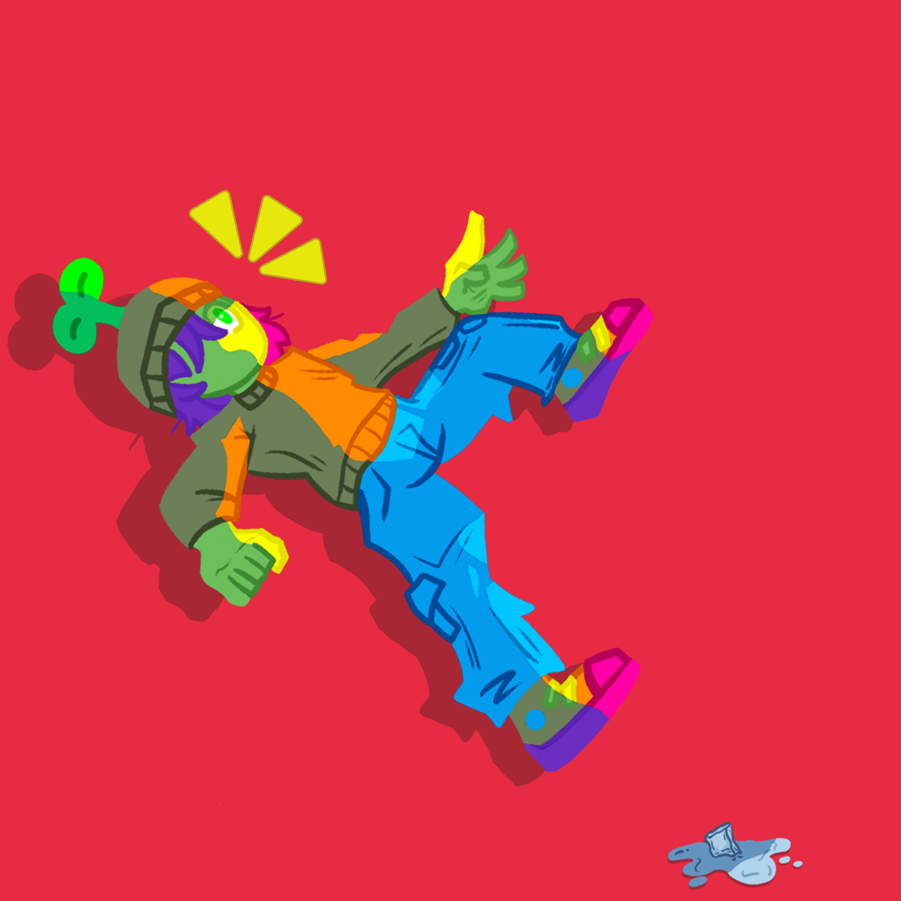

Seth Logan Pangilinan
Who am I?
My name is Seth and I am a professional Artist, Illustrator, and Designer. I am currently pursing a bachelors in Media Arts and design. I strive to create high eye pleasing works for clients all around the globe.
My Education
- Richland Community College
- University of Texas at Dallas
My Technical Skills
- Adobe Photoshop
- Adobe Illustrator
- Maya
- Paint Tool SAI
- Microsoft Sweep
My Soft Skills
- Strong Communication Skills
- Strong Collaboration Skills
- Problem Solving Abilities
Achivements
- Artist Selected for Spring Juriour Art Exhibition (UTD)
- National 1st PlaceFishing competion winner (2018)
- Voted #1 to become President in Highschool
Contact Information

"ICE Blows" Spring Juried Art Exhibition 2026 (UTD), Seth Pangilinan